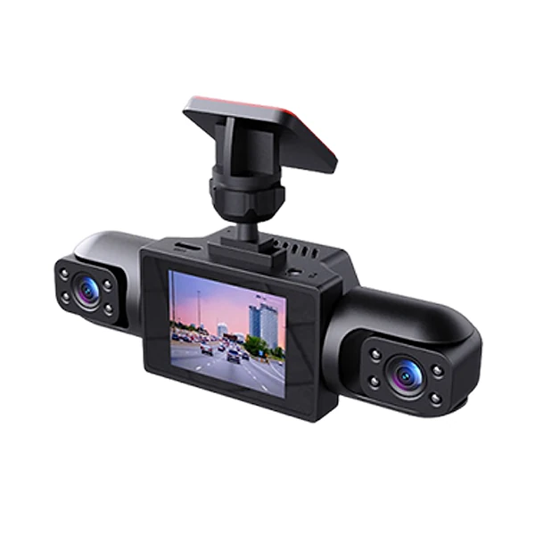
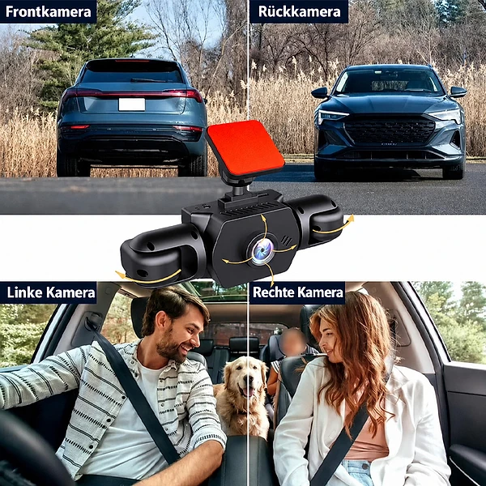

Was ist Cartekit Vision360 und wie funktioniert es?
Die Cartekit Vision360 ist eine Dashcam, also eine Kamera für das Auto, die hinter dem Rückspiegel an der Windschutzscheibe befestigt wird und Fahrten aufzeichnet. Laut der offiziellen Website arbeitet sie mit vier gleichzeitig aufnehmenden HD-Objektiven und soll so einen Rundumschutz von 360 Grad bieten, damit sowohl die Straße vor dem Fahrzeug als auch der rückwärtige Verkehr und der Innenraum erfasst werden.
Das Hauptobjektiv filmt die Straße nach vorne in 1080p Full HD mit einem Weitwinkel von 170 Grad, sodass Kennzeichen laut Hersteller gut lesbar bleiben sollen. Zwei der Objektive lassen sich um 180 Grad schwenken, etwa zur Seite oder in den Innenraum. Auf dem Gehäuse sitzt ein kleines Display, über das Sie das Bild direkt sehen können. Die beiden seitlichen Objektive haben laut Produktbildern kleine Infrarot-LEDs für Aufnahmen im dunklen Innenraum.
Die Kamera zeichnet in einer Endlosschleife auf: Ist die Speicherkarte voll, werden die ältesten, nicht geschützten Videos automatisch überschrieben. Ein 3-Achsen-G-Sensor erkennt plötzliche Stöße und sperrt die Aufnahme dieses Moments gegen Überschreiben. Für Fahrten bei Dunkelheit nennt der Hersteller eine hochempfindliche Nachtsicht.
Über das integrierte WLAN können Sie die Videos laut Website direkt auf dem Smartphone ansehen und teilen. Zusätzlich wird eine 24-Stunden-Parküberwachung beworben, bei der sich die Kamera aktiviert, wenn sie Bewegungen oder Erschütterungen rund um das geparkte Auto registriert. Laut Website wird die Kamera bereits von über 13.000 Kundinnen und Kunden genutzt.
Zur Einordnung: Dashcams sind in Deutschland erlaubt, ihre Aufnahmen werden aber datenschutzrechtlich unterschiedlich bewertet. Eine dauerhafte, anlasslose Aufzeichnung öffentlicher Bereiche ist problematisch, während kurze, anlassbezogene Aufnahmen nach einem Unfall vor Gericht als Beweis zugelassen werden können. Die Werbeaussage „unanfechtbare Beweise“ sollten Sie deshalb nicht wörtlich nehmen.
Cartekit Vision360 Funktionen
Laut der offiziellen Website bietet die Cartekit Vision360:
Vier Objektive: Front, Rück, links und rechts beziehungsweise Innenraum, zwei davon um 180° schwenkbar.
Frontkamera: 1080p Full HD mit 170°-Weitwinkel.
Nachtsicht: hochempfindliche Aufnahme bei schwachem Licht.
Loop-Aufnahme: automatisches Überschreiben der ältesten Dateien.
G-Sensor: 3-Achsen-Sensor, sperrt Aufnahmen bei einer Kollision.
Parküberwachung: aktiviert sich bei Bewegung oder Erschütterung.
WLAN: Videos per App auf dem Smartphone ansehen und teilen.
Angaben zu Speicherkarte (Größe und ob sie mitgeliefert wird), Stromversorgung, Displaygröße oder Auflösung der Neben-Kameras nennt die Website nicht. Der Abschnitt „Tech Specs“ auf der Website beschreibt sogar Reifen, Lichteffekte und Musik, offenbar ein Rest aus einer anderen Produktseite. Prüfen Sie die technischen Daten deshalb nach der Lieferung in der Anleitung.
Als Einsatzbereiche nennt die Website Beweise für Versicherungsansprüche und Rechtsschutz, sicheres Autofahren mit weniger Stress bei unvorhersehbaren Ereignissen, Schutz vor Diebstahl und Vandalismus beim Parken sowie das Festhalten von Roadtrips, um Erlebnisse mit Freunden und Familie zu teilen. Die Produktbilder zeigen ein kompaktes schwarzes Gehäuse mit Halterung für die Windschutzscheibe, zwei seitlichen Objektiven mit Infrarot-LEDs und einem Bildschirm in der Mitte.
Cartekit Vision360 Anwendung
Laut der offiziellen Website ist die Installation einfach: Die Kamera wird hinter dem Rückspiegel an der Windschutzscheibe befestigt und ist so kompakt, dass sie dort kaum auffällt. Danach wird sie mit Strom verbunden, in der Regel über den Zigarettenanzünder oder einen USB-Anschluss im Auto, und richtet sich laut Kundenbewertungen praktisch von selbst ein.
Für die Aufnahme brauchen Dashcams eine Speicherkarte. Richten Sie die Frontkamera so aus, dass die Straße gut im Bild ist und die Motorhaube nur einen kleinen Teil einnimmt. Die schwenkbaren Objektive drehen Sie je nach Bedarf Richtung Innenraum oder Seitenfenster. Videos sehen Sie anschließend über die App per WLAN auf dem Smartphone an.
Allgemeine Hinweise: Bedienen Sie Kamera und App nicht während der Fahrt. Achten Sie darauf, dass die Kamera nicht das Sichtfeld verdeckt. Wer den Innenraum filmt, sollte Mitfahrende darüber informieren. Für die Parküberwachung braucht die Kamera auch bei ausgeschaltetem Motor Strom; klären Sie vorher, wie das in Ihrem Fahrzeug gelöst ist, damit die Autobatterie nicht leer wird.
Sichern Sie wichtige Aufnahmen nach einem Vorfall rechtzeitig, bevor sie im Loop-Modus überschrieben werden. Der G-Sensor schützt zwar automatisch den Moment eines Aufpralls, Aufnahmen von Beinahe-Unfällen oder Verkehrsverstößen anderer müssen Sie aber selbst speichern.
Cartekit Vision360 – Rückerstattung
Laut der offiziellen Website gilt eine 30-Tage-Geld-zurück-Garantie. Wer nicht zufrieden ist, kann das Paket nach Angaben des Herstellers innerhalb von 30 Tagen zurückschicken und erhält eine Rückerstattung, „ohne Wenn und Aber“. Eine ausführliche Rückgaberichtlinie mit Fristen und Ablauf ist auf der Website allerdings nicht verlinkt.
Die Nutzungsbedingungen verweisen für Rückgaben und Umtausch auf die Rückgabebestimmungen des Shops. Nehmen Sie vor einer Rücksendung am besten zuerst per E-Mail Kontakt mit dem Kundenservice auf und fragen Sie nach der Rücksendeadresse, damit das Paket an die richtige Stelle geht. Für Verbraucher in der EU gilt zusätzlich das gesetzliche Widerrufsrecht von 14 Tagen. Verpacken Sie die Kamera für den Rückversand sicher und legen Sie alle Teile wie Halterung und Kabel bei.
Etwas unübersichtlich sind die Angaben zum Verkäufer. Laut Impressum ist die MIRENFAL LIMITED mit Sitz in Coventry (Vereinigtes Königreich) das Unternehmen hinter der Website, als Besitzer der Website wird Colapa genannt, und die Nutzungsbedingungen nennen die Cola Technology International Co., Limited als Betreiberin. Der Kundenservice ist per E-Mail und über eine Telefonnummer mit Vorwahl aus Hongkong erreichbar.
Bewahren Sie Ihre Bestellbestätigung, die Originalverpackung und die Sendungsnummer der Rücksendung auf, damit Sie die Frist nachweisen können. Laut Nutzungsbedingungen können Bestellungen vom Shop geändert oder storniert werden; in diesem Fall werden Sie per E-Mail oder Telefon informiert.
Cartekit Vision360 Kundenbewertungen
-
Lukas A. — BerlinVerifizierter Kauf
„Ich habe die Cartekit jetzt seit etwa 2 Monaten und sie ist ein echter Gamechanger! Die Installation war kinderleicht und sie hat sich praktisch von selbst eingerichtet. Die Videoqualität aus verschiedenen Winkeln ist wirklich beeindruckend.“
-
Johannes S. — BerlinVerifizierter Kauf
„Dank der Cartekit hatte ich gestochen scharfe Aufnahmen einer Fahrerflucht, wodurch ich ohne jeglichen Stress die mir zustehende Entschädigung von der Versicherung erhalten habe!“
-
Katja C. — MünchenVerifizierter Kauf
„Gott sei Dank hatte ich die Cartekit im Auto, als ein rücksichtsloser Fahrer über Rot fuhr und meinen Scheinwerfer beschädigte. Dieses Gerät bietet so viele Funktionen und ist dabei so intuitiv.“
Cartekit Vision360 – Wo kaufen?
Die Cartekit Vision360 wird über die offizielle Website cartekit.com verkauft. Dort finden Sie die Übersicht, die Funktionen, die Kundenbewertungen und die Bestellseite. Links zu Kontakt, Datenschutzrichtlinie und Geschäftsbedingungen stehen im Fußbereich der Seite; das Impressum mit den Firmenangaben finden Sie unter „Kontakt“.
Dashcams mit mehreren Objektiven in ähnlicher Bauform werden von vielen Anbietern verkauft, auch im Elektronik- und Autozubehörhandel. Bei Angeboten auf Marktplätzen ist nicht sicher, ob es sich um dasselbe Modell handelt, und die 30-Tage-Garantie des Shops gilt dort in der Regel nicht.
Achten Sie beim Besuch darauf, dass die Adresse cartekit.com lautet, denn nur dort gilt die Garantie des Shops. Die Website arbeitet mit einem Einführungsangebot und Hinweisen auf begrenzten Vorrat; lassen Sie sich davon nicht drängen und vergleichen Sie in Ruhe. Prüfen Sie vor dem Abschluss, ob eine Speicherkarte im Lieferumfang enthalten ist, und lesen Sie die Bestellübersicht genau. Bewahren Sie die Bestellbestätigung auf, denn darin stehen die Daten, die Sie für eine Rückfrage beim Kundenservice brauchen.
Um sicherzugehen, dass Sie das Originalprodukt erhalten, besuchen die meisten Nutzer die offizielle Website.
Ist Cartekit Vision360 Betrug?
Nach den verfügbaren Informationen gibt es keinen eindeutigen Hinweis darauf, dass die Cartekit Vision360 Betrug ist. Die Kamera wird über eine eigene Website mit Funktionsbeschreibung, Kundenbewertungen, Nutzungsbedingungen, Datenschutzrichtlinie und Impressum verkauft, und es gibt eine 30-Tage-Geld-zurück-Garantie.
Positiv sind die verständliche Beschreibung der Funktionen und die Bilder, die die vier Kamerapositionen zeigen.
Es gibt aber mehrere Punkte, die Aufmerksamkeit verdienen, besonders bei einem Gerät, das im Streitfall als Beweismittel dienen soll. Die Angaben zum Unternehmen nennen drei verschiedene Namen, darunter eine Firma in Großbritannien und eine Telefonnummer aus Hongkong. Der Abschnitt mit den technischen Daten beschreibt ein ganz anderes Produkt, und eine Kundenbewertung erwähnt einen fremden Produktnamen. Technische Details wie Speicherkarte und Stromversorgung fehlen. Die Werbung mit „unanfechtbaren Beweisen“ und „Entwickelt in Deutschland“ lässt sich nicht überprüfen, ebenso die Angabe von über 13.000 Kundinnen und Kunden.
Vorsicht ist außerdem bei Angeboten außerhalb der offiziellen Website geboten, denn dort gilt die Garantie des Shops in der Regel nicht.
Wie bei jedem günstigen Gerät dieser Art sollten Sie realistische Erwartungen an Bildqualität und Nachtsicht haben. Wer die Bedingungen kennt, die Rückgabe über den Kundenservice klärt und die Garantiefrist im Blick behält, geht beim Kauf auf der offiziellen Website nach heutigem Stand kein besonderes Risiko ein.
Wer Produktdetails überprüfen oder die aktuelle Verfügbarkeit prüfen möchte, ist auf der offiziellen Cartekit Vision360-Website am sichersten aufgehoben.
